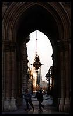

Kleines Cafe, Franziskanerplatz
 As well as being small, obviously, Kleines Cafe is my favourite cafe in
Vienna so far. It has very much its own character, rather than looking like a copy of somewhere down the road. They also get about a billion brownie points for the unfeasible mound of frothed milk on the top of my melange - just what I want in a capuccino. I appreciate not having to ask for a glass of water with my coffee as well.
As well as being small, obviously, Kleines Cafe is my favourite cafe in
Vienna so far. It has very much its own character, rather than looking like a copy of somewhere down the road. They also get about a billion brownie points for the unfeasible mound of frothed milk on the top of my melange - just what I want in a capuccino. I appreciate not having to ask for a glass of water with my coffee as well.
This is a good place for people-watching, because of the variety and
unclassifiable nature of the staff.
As with most Viennese cafes, I don't feel any more rushed than the guy
reading one of the newspapers. I thoroughly approve of going out to a cafe to read the paper, rather than getting one delivered at home.
Back again, in the evening five days later, I find that Kleines
Cafe is just as good after dark. The coffee is good, but this time it's very smoky, so I won't hang around for too long.
Several days have passed again, and after a good day wandering around
Vienna I'm back in Kleines Cafe. I have a slight regret that I didn't spend all day here, because they have tables and chairs out in the square, which are empty now that it is dark. They'll be great if it is sunny again tomorrow, especially since there are no cars on the square, and only the odd taxi driving past.
Unusually, some London geyser in a dark pink shirt is talking loudly on
a mobile at the other end of the cafe - 'I'm in clowns cafe mate; come 'n' find us!' Meanwhile, I'm shrinking into the opposite corner. Oh well, at least he isn't wearing a football scarf.
It is strange that I find this surprising - imagine being surprised at
hearing a foreign language in London or Paris - but then that's just how cosmopolitan Vienna isn't.

Cafe Hotel Sacher, Philharmonikerstrasse
Definately the posh end of the Viennese cafe spectrum, I thought that
this might be a good place to try sacher-torte.
I had the impression that I ought to get very excited about
sacher-torte, maybe even to the point of having a loud orgasm while eating it. It turned out to be the sort of sugary chocolate cake that you get from Marks & Spencer - nothing special. As chocolate cake goes, I prefer the outrageous chocolate brownies, or whatever they are called, that Seattle Coffee Company sells in the UK.
I guess that this cafe is the local equivalent of places like the
Angelina tea room on rue de Rivoli in Paris. This is better though - my food came hot and the service is not at all arrogant and rude. The waiter seemed most apologetic when having to ask a French tourist to leave his coat in the cloakroom before sitting down.
Europa, Zollergasse
Europa is like Marx in Luxembourg, modern eighties-style
minimalism and lots of trendy people. You don't get kicked out of here until 5 a.m., though. The red, white and blue decor is good and the lighting about right for the small hours of the morning. The chicken curry toasted sandwich that the guy next to me has is very tasty - better than I'd expect in this kind of bar.
(Back again, four days later, Europa is just as busy. This time
I got my own toasted sandwich - bits of pork with a spicy sauce. The food is pretty good here, which I find slightly unexpected in a bar that looks more like a night club than anything else. So while munching on my toasted sandwich it occurrs to me that although it is more refined it isn't a million miles away from the style of one of My Magnificent Mignight Munchies - proper student food.)
We're a bit out of the centre in this part of town, next to
Mariahilferstrasse, which has a lot of shops where you can afford to do more than just window shop. Earlier on this evening I was wandering around looking for somewhere to have a coffee: I would have done better if my goal had been to find lots of cafes that are closed on Sundays.
I had to settle for a Coke in Subway, one of a chain of
sandwich shops that has all the style and class of Wimpy (in the UK) or Quick (in Belgium and France). At least it was open, and I'm told that their sandwiches are pretty good.
On the way home at 2 a.m. I now wish that I had had some
food at dinner time after all - I have Beer Munchies! Fortunately, I have found a Würstelstand where I can get a bratwurst hot dog.
The bratwurst was okay - slighly seasoned, but not big enough.
The käsekrainer that I followed it with was much more filling, mainly due to the melted cheese inside the sausage.
Considered (drunken) verdict: not bad, but nothing like a good kebab.
 As well as being small, obviously, Kleines Cafe is my favourite cafe in
Vienna so far. It has very much its own character, rather than looking like a copy of somewhere down the road. They also get about a billion brownie points for the unfeasible mound of frothed milk on the top of my melange - just what I want in a capuccino. I appreciate not having to ask for a glass of water with my coffee as well.
As well as being small, obviously, Kleines Cafe is my favourite cafe in
Vienna so far. It has very much its own character, rather than looking like a copy of somewhere down the road. They also get about a billion brownie points for the unfeasible mound of frothed milk on the top of my melange - just what I want in a capuccino. I appreciate not having to ask for a glass of water with my coffee as well.{kind=link}